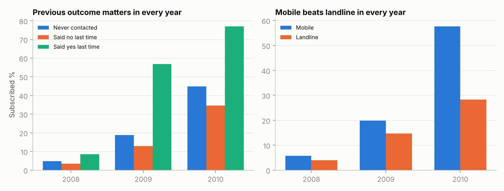

Independent analysis / Bank campaign analysis
Who is worth contacting again?
I examined the Bank Marketing dataset to explore how previous campaign outcomes, contact channels and repeated attempts related to deposit subscriptions.

The business question
The analysis used 41,188 campaign records to investigate which groups had higher observed subscription rates and where further contact attempts appeared less productive.
What stood out
People with a successful previous campaign outcome had a substantially higher observed conversion rate. Conversion also declined across groups with higher recorded contact counts. Both patterns suggest useful hypotheses for contact prioritization.
What I would test
I would test contact priority based on previous outcomes and examine a limit on repeated attempts. I would compare results within similar periods and customer groups before making a permanent rule.
What needs care
Recorded campaign attempts are not a randomized experiment. They cannot prove that another call caused lower conversion or quantify staff time saved. Call duration was excluded from pre-contact targeting logic because it is only known after a call. Without cost and revenue data, these findings describe conversion rather than profitability.